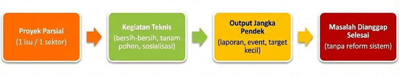
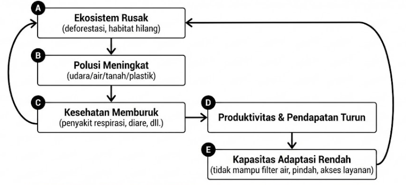
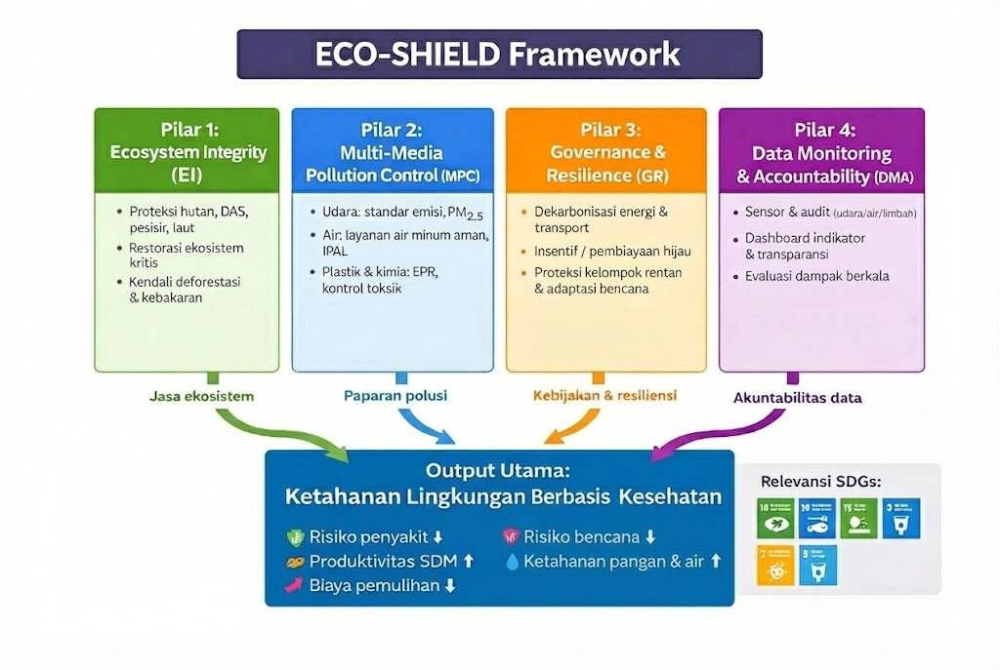
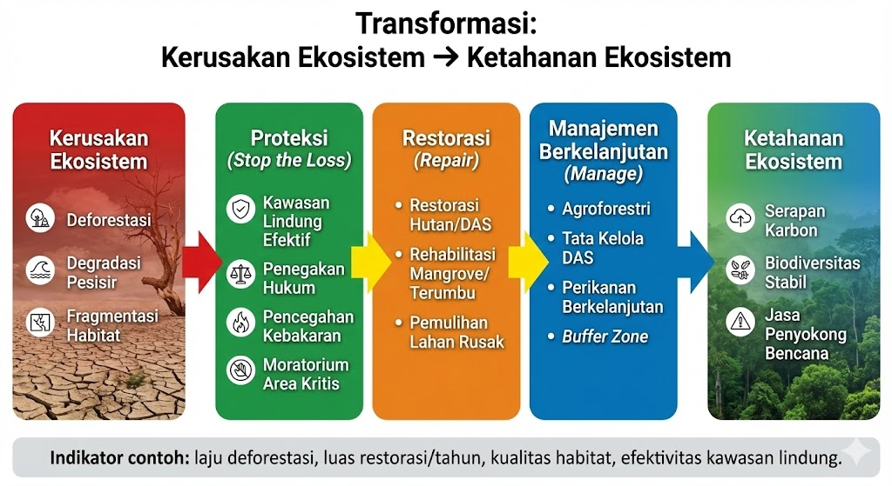
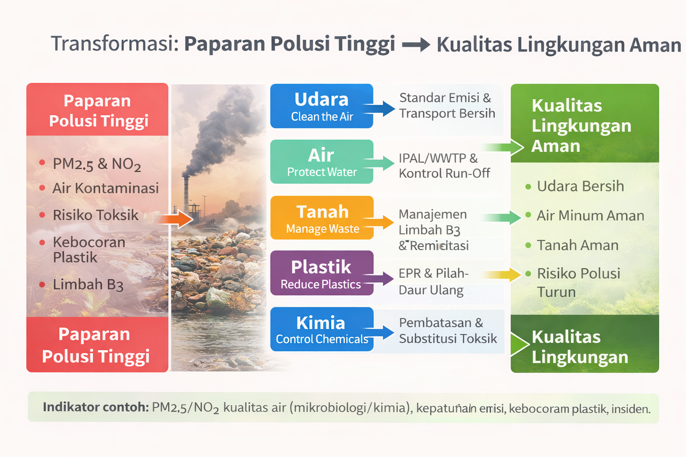
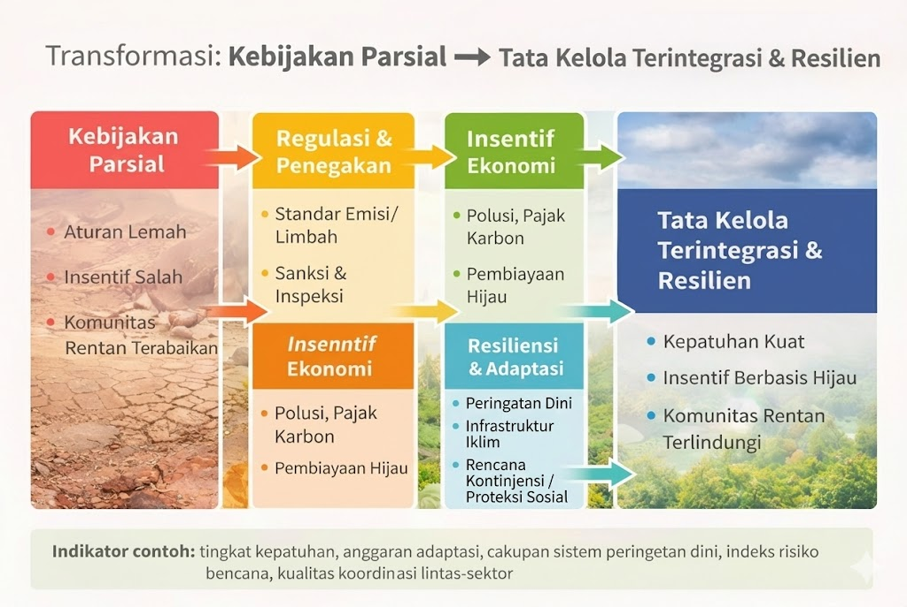
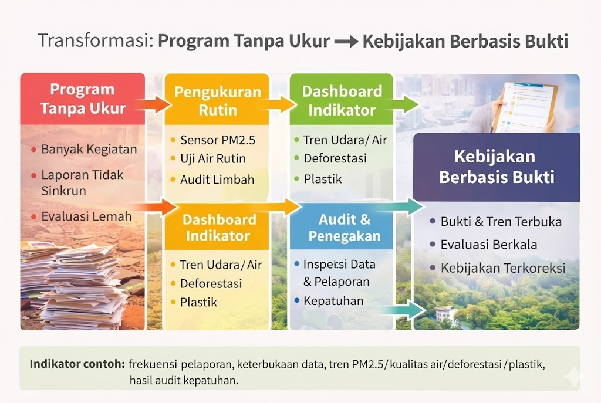
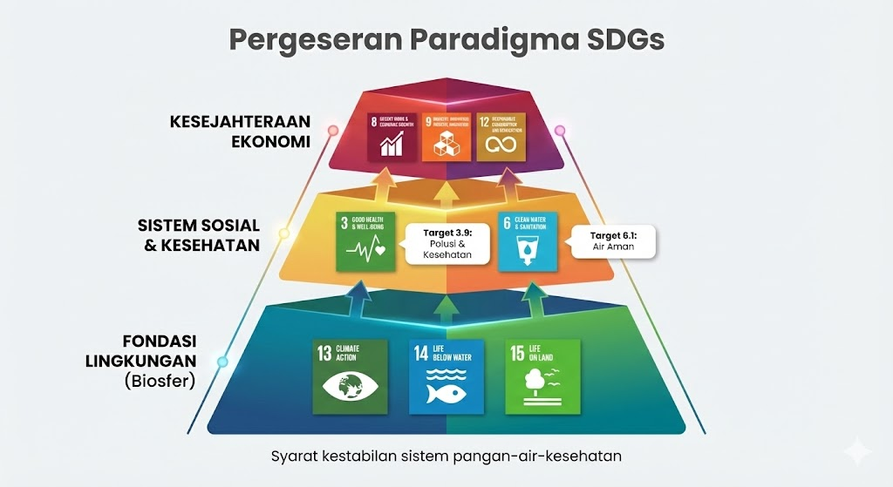

8 UAS-2 My Opinions
8.1 Rekonstruksi Ketahanan Lingkungan melalui Strategi “ECO-SHIELD”
Opini ini menyoroti perlunya pergeseran paradigma: degradasi lingkungan dan polusi harus diperlakukan sebagai krisis sistemik (ekosistem + polusi + tata kelola), bukan sekadar proyek terpisah seperti “tanam pohon sekali”, “bersih-bersih pantai”, atau “kampanye hemat listrik” tanpa desain kebijakan yang menyatu.
8.2 Kerangka Kegagalan Sistemik: Degradasi Lingkungan & Polusi
8.2.1 Karakteristik Model Linear (Pendekatan Konvensional)

8.2.1.1 Asumsi Model
- Jika ada program teknis (mis. tanam pohon / bersih pantai / sosialisasi), maka masalah lingkungan dianggap berkurang otomatis.
- Polusi bisa diselesaikan satu per satu (udara saja / air saja / sampah saja), tanpa integrasi lintas-sektor.
- Dampak ekonomi dianggap tidak langsung, sehingga prioritas kebijakan bisa ditunda.
- Keberhasilan diukur dari output jangka pendek (jumlah kegiatan, peserta, laporan), bukan dari perubahan indikator (PM2.5, kualitas air, laju deforestasi, kebocoran plastik).
8.2.2 Bukti Kegagalan: Data Global (FAO/WHO/UNEP/IPBES)
Model linear gagal karena krisis lingkungan itu multi-sumber dan saling memperkuat: kerusakan ekosistem → polusi meningkat → kesehatan menurun → biaya publik naik → kapasitas pemulihan makin lemah.
Indikator krisis (ringkas): - Deforestasi: ~10 juta ha/tahun (2015–2020) - Biodiversitas: ~1 juta spesies terancam - Polusi udara: ~99% populasi terpapar di atas pedoman WHO - Kematian dini akibat polusi udara: ~6,7 juta/tahun - Air minum aman: gap 2,1–4,4 miliar orang (perbedaan estimasi menunjukkan gap data & metode) - Plastik ke laut: ~11 juta ton/tahun
8.2.3 Analisis Opportunity Cost & Risiko (berdasarkan konteks)
Table 7.2: Analisis kegagalan berbasis konteks
| Konteks/Wilayah | Masalah Utama | Dampak (Opportunity Cost / Risiko) |
|---|---|---|
| Kota padat + industri | Emisi kendaraan & pabrik tinggi | Biaya kesehatan naik, produktivitas turun, beban layanan kesehatan meningkat |
| Wilayah pesisir & kepulauan | Plastik & degradasi ekosistem laut | Pendapatan nelayan turun, pariwisata terganggu, ketahanan pangan laut melemah |
| Area hutan & frontier | Ekspansi lahan/deforestasi | Banjir/kekeringan naik, konflik lahan, hilangnya jasa ekosistem |
| Komunitas miskin & terpencil | Akses air bersih terbatas/terkontaminasi | Waktu/biaya untuk air naik, penyakit meningkat, kualitas hidup turun |
| Zona rawan iklim | Cuaca ekstrem makin sering | Aset rusak, gagal panen, biaya pemulihan berulang |
Dilema Ekonomi
Bagi populasi rentan, “biaya peluang” (opportunity cost) hidup di lingkungan rusak sangat tinggi: uang dan waktu habis untuk sakit, air bersih, dan pemulihan—bukan untuk pendidikan, usaha, atau peningkatan pendapatan.
8.2.4 Lingkaran Setan: Degradasi Lingkungan–Polusi–Kemiskinan

Penjelasan singkat siklus: - Ekosistem rusak (deforestasi, habitat hilang) menurunkan “jasa alam” (air bersih, penyangga banjir, penyerap karbon). - Polusi meningkat (udara/air/tanah/plastik) memperburuk kualitas hidup dan kesehatan. - Kesehatan memburuk → produktivitas turun → pendapatan turun. - Pendapatan turun → kemampuan adaptasi rendah (akses air bersih, perumahan layak, layanan kesehatan). - Kapasitas adaptasi rendah membuat komunitas makin rentan terhadap kerusakan lingkungan berikutnya.
Prediksi Tanpa Intervensi
Jika krisis dibiarkan, lingkaran ini memperbesar ketimpangan: kelompok rentan terdorong ke “survival mode”, sementara biaya bencana dan kesehatan terus naik secara nasional.
8.3 II. Pilar Strategi “ECO-SHIELD”
8.4 Solusi Transformatis
Strategi ECO-SHIELD mengubah pendekatan parsial menjadi pendekatan sistemik: menahan kerusakan ekosistem, menurunkan polusi lintas-media, memperkuat tata kelola transisi, dan memastikan semua intervensi terukur melalui monitoring data.
8.4.1 Arsitektur “ECO-SHIELD”

8.4.2 Pilar 1 — Ecosystem Integrity (EI)
Ecosystem Integrity Menjaga penopang kehidupan (hutan, tanah, DAS, pesisir, laut) agar jasa ekosistem tetap bekerja: penyerap karbon, penyedia air, penyangga bencana, dan basis pangan.
8.4.2.1 Masalah yang Diselesaikan
Ketika deforestasi, fragmentasi habitat, dan degradasi pesisir terjadi bersamaan, kemampuan alam menyerap karbon dan menahan bencana melemah → risiko banjir/kekeringan meningkat dan ketahanan pangan–air turun.
8.4.2.2 Mekanisme Implementasi
Intervensi pilar ini berjalan lewat 3 jalur:
- Proteksi (Stop the loss): kawasan lindung efektif, penegakan hukum, pencegahan kebakaran, moratorium area kritis.
- Restorasi (Repair): restorasi hutan/DAS, rehabilitasi mangrove/terumbu, pemulihan lahan rusak.
- Manajemen berkelanjutan (Manage): agroforestri, tata kelola DAS, perikanan berkelanjutan, buffer zone.
8.4.2.3 Tujuan Strategis
Tujuan strategis pilar ini adalah menurunkan biaya pemulihan dan risiko bencana dengan menjadikan alam sebagai infrastruktur alami (natural infrastructure).
8.4.2.4 Model Transformasi (diagram)

Indikator contoh: laju deforestasi, luas restorasi/tahun, kualitas habitat, efektivitas kawasan lindung.
8.4.3 Pilar 2 — Multi-Media Pollution Control (MPC)
Multi-Media Pollution Control Menurunkan paparan polusi secara simultan pada udara–air–tanah, termasuk plastik dan bahan kimia, karena dampaknya saling berantai ke kesehatan dan ekonomi.
8.4.3.1 Masalah yang Diselesaikan
Menangani polusi hanya dari satu sisi (mis. “udara saja” atau “sampah saja”) sering gagal karena sumber polusi lintas-sektor dan berpindah media (udara ↔︎ tanah ↔︎ air) melalui limbah, run-off, dan rantai makanan.
8.4.3.2 Mekanisme Implementasi
Pendekatan implementasi dibagi per media + rantai pasok:
Table 7.3: Mekanisme kontrol polusi multi-media
| Media | Sumber utama | Intervensi kunci | Output yang diharapkan |
|---|---|---|---|
| Udara | kendaraan, PLTU/industri, pembakaran | standar emisi, inspeksi, transport publik, energi bersih | PM2.5/NO₂ turun, penyakit respirasi turun |
| Air | limbah domestik/industri, pertanian | IPAL/WWTP, kontrol run-off, uji kualitas air rutin | akses air aman naik, kontaminasi turun |
| Tanah | dumping, residu kimia, logam berat | manajemen limbah B3, remediasi, audit limbah | risiko toksik turun |
| Plastik | kemasan, sistem sampah bocor | EPR, pengurangan sekali pakai, pemilahan & daur ulang | kebocoran plastik turun |
| Kimia | pestisida/merkuri/solven | registrasi & pembatasan, substitusi, pengawasan rantai pasok | paparan toksik turun |
8.4.3.3 Tujuan Strategis
Tujuan pilar ini adalah membuat “biaya kesehatan” turun dengan menekan paparan polutan di hulu, bukan menanggung sakitnya di hilir.
8.4.3.4 Model Transformasi (diagram)

Indikator contoh: PM2.5/NO₂, kualitas air (mikrobiologi/kimia), kepatuhan emisi, kebocoran plastik, insiden limbah B3.
8.4.4 Pilar 3 — Governance & Resilience (GR)
Governance & Resilience Membuat perubahan terjadi dan bertahan: mengunci kebijakan lintas-sektor, memastikan kepatuhan, melindungi kelompok rentan, dan meningkatkan kesiapsiagaan bencana.
8.4.4.1 Masalah yang Diselesaikan
Krisis lingkungan sering bukan gagal karena “tidak ada solusi”, tetapi karena tata kelola: aturan lemah, insentif salah arah, koordinasi lintas instansi rendah, dan kelompok rentan menanggung dampak paling besar.
8.4.4.2 Mekanisme Implementasi
Implementasi berjalan melalui 4 mekanisme kebijakan:
- Regulasi & penegakan: standar emisi/limbah, sanksi, inspeksi.
- Insentif ekonomi: pajak polusi, subsidi energi bersih, pembiayaan hijau.
- Resiliensi & adaptasi: peringatan dini, infrastruktur tahan iklim, rencana kontinjensi.
- Proteksi sosial: jaring pengaman untuk kelompok rentan (air, kesehatan, relokasi aman).
8.4.4.3 Tujuan Strategis
Tujuan pilar ini adalah memastikan transisi yang adil (just transition): perubahan berjalan tanpa “mengorbankan” komunitas miskin dan daerah terpencil.
8.4.4.4 Model Transformasi (diagram)

Indikator contoh: tingkat kepatuhan, anggaran adaptasi, cakupan sistem peringatan dini, indeks risiko bencana, kualitas koordinasi lintas-sektor.
8.4.5 Pilar 4 — Data Monitoring & Accountability (DMA)
Data Monitoring & Accountability Mengunci akuntabilitas: semua program harus bisa diukur, diaudit, dan dievaluasi, sehingga kebijakan tidak berhenti di “kegiatan”, tetapi terlihat pada perubahan indikator nyata.
8.4.5.1 Masalah yang Diselesaikan
Tanpa data yang konsisten, krisis terlihat “kabur”: program terlihat banyak, tetapi indikator tidak bergerak. Akibatnya, kebijakan mudah jadi seremonial dan sulit dievaluasi.
8.4.5.2 Mekanisme Implementasi
Empat komponen sistem monitoring:
- Pengukuran rutin: sensor PM2.5, uji kualitas air, audit limbah.
- Dashboard indikator: tren terbuka (udara, air, deforestasi, plastik).
- Audit & penegakan: inspeksi berbasis data, pelaporan kepatuhan.
- Evaluasi dampak: review berkala (sebelum–sesudah), koreksi kebijakan.
8.4.5.3 Tujuan Strategis
Tujuan pilar ini adalah memastikan kebijakan “mengunci hasil”: kalau indikator tidak berubah, maka desain intervensi harus diubah—bukan sekadar menambah program baru.
8.4.5.4 Model Transformasi (diagram)

Indikator contoh: frekuensi pelaporan, keterbukaan data, tren PM2.5/kualitas air/deforestasi/plastik, hasil audit kepatuhan.
Jika keempat pilar berjalan bersamaan, hasil akhirnya adalah: Ketahanan Lingkungan → Kesehatan publik membaik → Produktivitas naik → Risiko bencana & biaya pemulihan turun → Stabilitas ekonomi lebih kuat.
Kerangka ECO-SHIELD langsung relevan dengan SDG 13, SDG 14, SDG 15, serta berdampak pada SDG 3.9 (polusi & kesehatan) dan SDG 6.1 (air minum aman).
8.5 III. Implikasi Skala Nasional dan Global
Penerapan strategi ECO-SHIELD mengubah dinamika kesehatan publik, produktivitas ekonomi, dan risiko bencana secara fundamental—karena intervensi dilakukan serentak pada ekosistem, polusi, tata kelola, dan akuntabilitas data.
8.5.1 Implikasi Nasional
8.5.1.1 Transformasi Demografi & Produktivitas
Sebelum (tanpa intervensi sistemik): - Paparan polusi tinggi → beban penyakit meningkat
- Produktivitas SDM turun → pendapatan stagnan
- Biaya pemulihan & kesehatan naik → fiskal tertekan
- Risiko bencana naik → aset dan infrastruktur rusak berulang
Sesudah (dengan ECO-SHIELD): - Paparan polusi turun → kesehatan membaik
- Produktivitas naik → output ekonomi meningkat
- Biaya pemulihan turun → ruang fiskal lebih sehat
- Risiko bencana turun → stabilitas aset & investasi naik
8.5.1.2 Redefinisi “Pembangunan”
Pembangunan bukan hanya pertumbuhan PDB, tetapi juga kemampuan negara menjaga lingkungan aman sebagai prasyarat kesehatan, ketahanan pangan–air, dan stabilitas ekonomi.
Dampak kebijakan (ringkas): - Lingkungan bersih = infrastruktur publik (mengurangi biaya kesehatan & bencana) - Data & audit = alat kontrol kebijakan (menghindari program seremonial)
8.5.2 Implikasi Global: SDGs & Target 2030
8.5.2.1 Pergeseran Paradigma SDGs

Penjelasan singkat: - SDG 13/14/15 bukan “tambahan”, tapi fondasi agar sistem pangan–air–kesehatan stabil. - SDG 3.9 (polusi & kesehatan) dan SDG 6.1 (air aman) menjadi indikator langsung kualitas hidup.
8.5.2.2 Keterkaitan SDGs (ringkas)
- SDG 13 — Climate Action: emisi, adaptasi, risiko bencana
- SDG 14 — Life Below Water: polusi laut, plastik, ekosistem pesisir
- SDG 15 — Life on Land: deforestasi, habitat, biodiversitas
- SDG 3.9: pengurangan kematian/penyakit akibat polusi
- SDG 6.1: akses air minum aman
8.5.3 Analisis Progress (Status dan Tantangan)
Status & Tantangan Global (lingkungan & polusi)
| Metrik | Status saat ini | Tantangan tersisa |
|---|---|---|
| Paparan polusi udara | Hampir universal (sangat luas) | Perlu transisi energi/transport & penegakan standar |
| Kematian dini terkait polusi udara | Jutaan per tahun | Beban kesehatan masih tinggi & timpang antarwilayah |
| Akses air minum aman | Masih terdapat gap besar | Infrastruktur + monitoring kualitas air belum merata |
| Deforestasi & degradasi habitat | Masih terjadi di banyak wilayah | Konflik lahan, tekanan komoditas, penegakan lemah |
| Plastik & limbah | Kebocoran ke ekosistem tinggi | Sistem sampah bocor, EPR belum kuat, perilaku & desain produk |
| Target 30x30 | Banyak negara berkomitmen | Implementasi & efektivitas kawasan lindung perlu dibuktikan |
Banyak inisiatif lingkungan gagal bukan karena “tidak ada program”, tetapi karena:
- tidak terintegrasi lintas-sektor,
- indikator tidak dipantau konsisten,
- biaya & manfaat tidak dihitung secara ekonomi (health cost, disaster cost).
Untuk mencapai target 2030, strategi harus adaptif dan berbasis bukti: jika indikator tidak bergerak (PM2.5, kualitas air, deforestasi, kebocoran plastik), maka desain kebijakan perlu dikoreksi—bukan sekadar menambah kampanye.